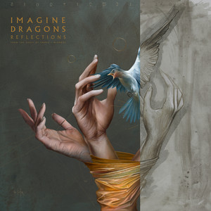
Reflctions (From The Vault of Smoke + Mirrors) is Imagine Dragons only collection. It was created for the 10 year anniversary of the album, Smoke + Mirrors. It contains 14 previously unreleased song demos recorded during the Smoke + Mirrors era.
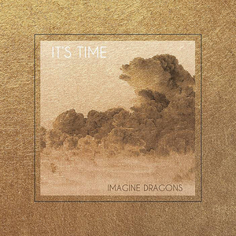
It's Time EP is Imagine Dragons last pre-album EP that you can find on streaming services. It was the band's longest and most sucessful EP, featuring their first ever hit song, It's Time.
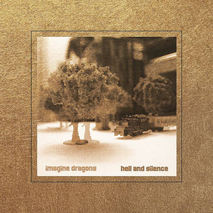
Hell And Silence is Imagine Dragons most interesting EP. This is their most alt-rock sounding piece of work, and over half of the songs found their way onto Night Visions upon release.
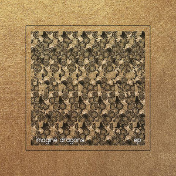
Imagine Dragons EP (self-titled EP) is Imagine Dragons first EP that can be found on streaming services. This was their intro to the world where they showcased who they were.
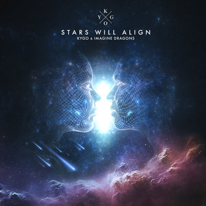
Stars Will Align is Imagine Dragons most recent non-album single of which they are the lead artist of. The song is in colaberation with Singaporian artist KYGO featureing a far more poppy, upbeat and almost electrical vibe to it than their other work.
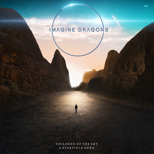
Children Of The Sky is Imagine Dragons most ascending song. When you listen to it, you just feel like you are flying. While this song can not be found in any albums on streaming services, it technically is a part of the Japanese Deluxe Edition of LOOM.
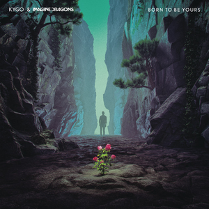
Born To Be Yours is Imagine Dragons first colaberaion with Singaporian artist KYGO that took the world by storm. It is also one of the few non-album singles that the band still preformed regualrly around the time of release.
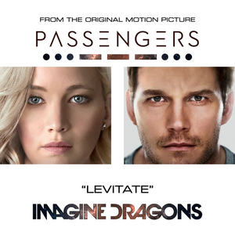
Levitate is Imagine Dragons most catchy song. This song was originally released for Sony's late 2016 film 'Passengers', staring Chris Pratt and Jenifer Lawrence, who can be seen on the single's cover. This song is not a part of any albums on streaming services, though it is technically a part of the physical Evolve Deluxe Edition.
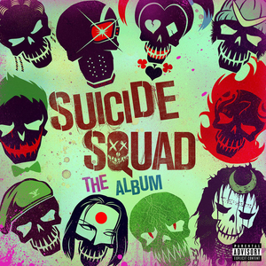
Sucker For Pain is Imagine Dragons most sucessful non-album single. Released for Warner Brothers DC Suicide Squad film, Imagine Dragons collaborated with many other rappers, including Lil Wayne, Ty Dolla $ign, Wiz Khalifa and Logic, and is the bands currently only non-album single to reach 1 Billion Views.
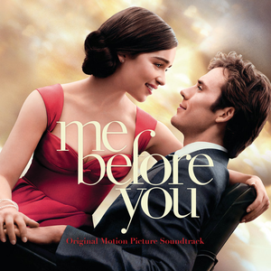
Not Today is Imagine Dragons most soft non-album single. This song has a peaceful, yet painful nature to it that really makes you think. It was recorded for the 2016 film Me Before You. This song is not a part of any albums on streaming services, though it is technically a part of the physical Evolve Deluxe Edition.
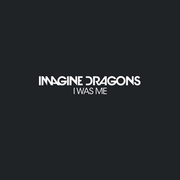
I Was Me is Imagine Dragons most unknown non-album single. Created for the refugee aid charity campaign, I Was Me is about loosing who you are, and wishing you could take yourself back to who you were in the prime of your life. Back when you were you (I Was Me).
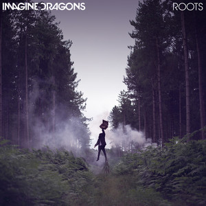
Roots is Imagine Dragons first non-album single, and interestingly actually had it's music video recorded right here in NZ. Unfortunately, they haven't come back to NZ since to play it. This song is not a part of any albums on streaming services, though it is technically a part of the physical Evolve Deluxe Edition.